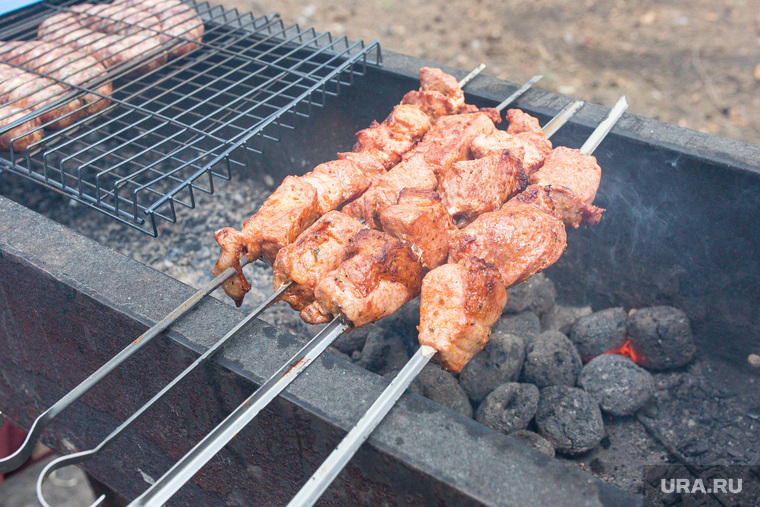

Диетолог рассказал, сколько шашлыка можно съесть без вреда
Без вреда для здоровья человек может съесть не более 100 граммов шашлыка в день.Такую рекомендацию дал диетолог Филипп Кузьменко.
«Считается, что можно съедать не больше 100 граммов красного мяса в день, а лучше даже не больше 70-ти.Доказано, что красное мясо и любые полуфабрикаты из мяса, если их очень много есть, повышают риск колоректального рака», — рассказал врач в интервью радио Sputnik.
Диетолог посоветовал перед шашлыками наполнить желудок овощами или просто водой.Кроме того, жареное мясо можно хранить в холодильнике несколько дней, поэтому необязательно объедаться в один день.
Подписывайтесь на URA.RU в Google News, Яндекс.Новости и на наш канал в Яндекс.Дзен, следите за главными новостями России и Урала в telegram-канале URA.RU и получайте все самые важные известия с доставкой в вашу почту в нашей ежедневной рассылке.
Posted On: 2021-05-03T06:44:27
Posted By: Сергей Мальцев

Content Date: 2021-05-03
Download Date: 2021-05-13
Document ID: L0C04C242